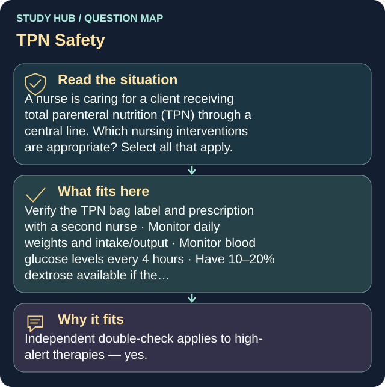

A nurse is caring for a client receiving total parenteral nutrition (TPN) through a central line. Which nursing interventions are appropriate? Select all that apply.
- Verify the TPN bag label and prescription with a second nurse
- Monitor daily weights and intake/output
- Monitor blood glucose levels every 4 hours
- Have 10–20% dextrose available if the next TPN bag is delayed
Independent double-check applies to high-alert therapies — yes.
Daily weights and I&O track fluid and nutritional response — yes. Glucose q4h — yes, because TPN delivers a heavy carbohydrate load and causes HYPERglycemia. Keeping dextrose available — yes: if TPN stops abruptly the client’s already-elevated insulin keeps working and they crash into HYPOglycemia. The wrong ones: TPN needs a DEDICATED lumen (a central line has several — just don’t share the TPN one). Tubing and bag change is every 24 HOURS, not 48 — this is essentially IV food and it grows bacteria. A filter is ALWAYS used, not just with lipids. Flushing before and after “use” only applies to intermittent (usually home) TPN — standard hospital TPN runs continuously, so there is no before or after. Dr. Karagessian’s advice on that last one: if you’ve never heard of it, leave it unselected.
Why the other answers do not fit
- Administer medications through the TPN line to reduce line access
The wrong ones: TPN needs a DEDICATED lumen (a central line has several — just don’t share the TPN one).
- Change the TPN tubing, bag, and filter every 48 hours
Tubing and bag change is every 24 HOURS, not 48 — this is essentially IV food and it grows bacteria.
- Use IV tubing with a filter only if lipids are included
A filter is ALWAYS used, not just with lipids.
- Flush the TPN line with saline before and after use
The wrong ones: TPN needs a DEDICATED lumen (a central line has several — just don’t share the TPN one).
